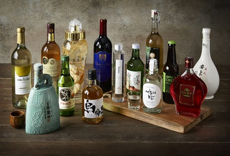

- 술술 소개
- 우리 술 종류


한국 전통 술에 대한 정보를 알려드립니다!
우리나라의 술의 역사는 고구려 시대 주몽 설화에서도 등장할 정도로 유구한 역사를 자랑합니다.
긴 역사를 가진 만큼 맛과 풍미가 뛰어난 여러 가지 술이 전해져 내려왔습니다.
한편 한국 술은 국제 주류 품평회에서 수상을 하는 등 그 가치를 증명해 보였습니다.
한국 전통 술을 지키기 위해서 우리가 먼저 찾고 권할 수 있도록 술에 대한 정보를 널리 알리겠습니다.